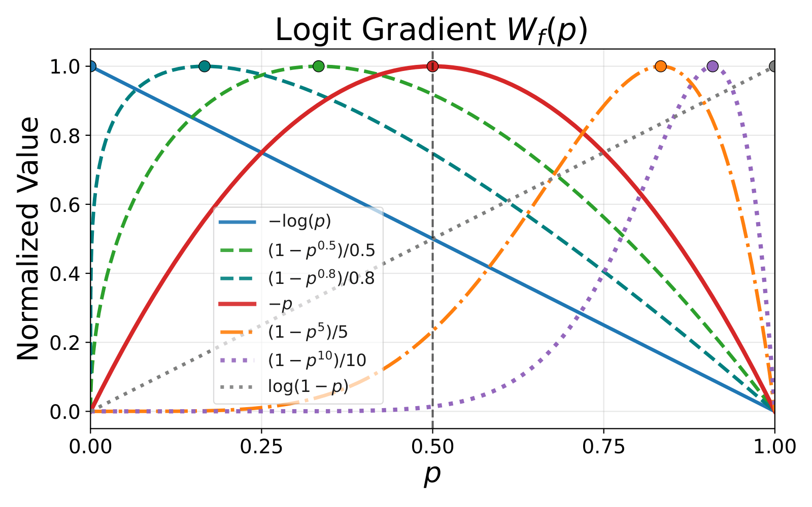
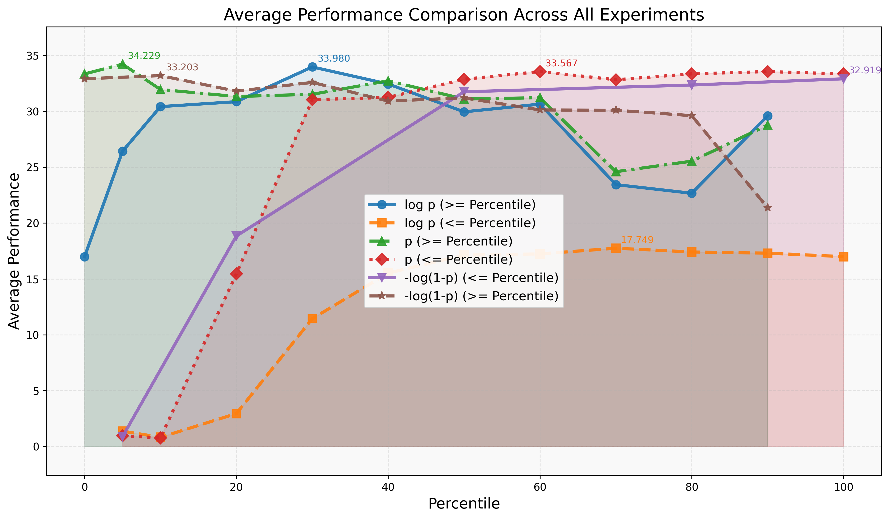
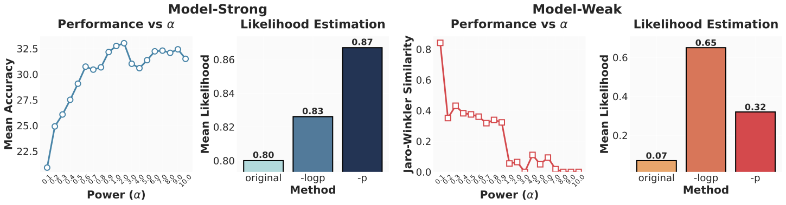
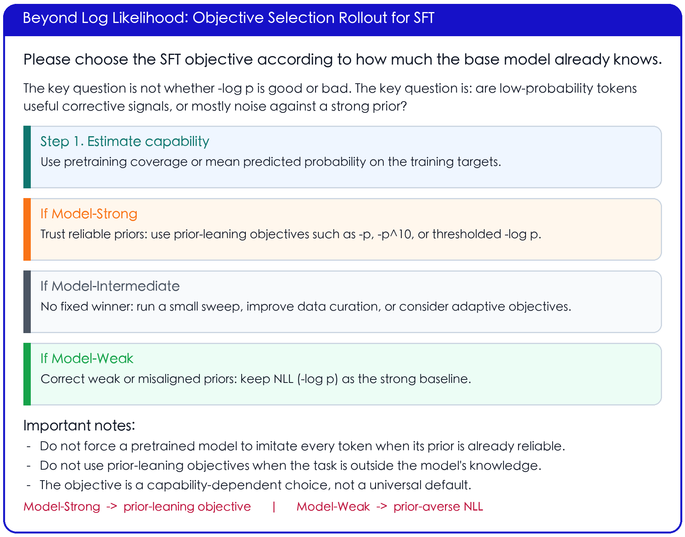
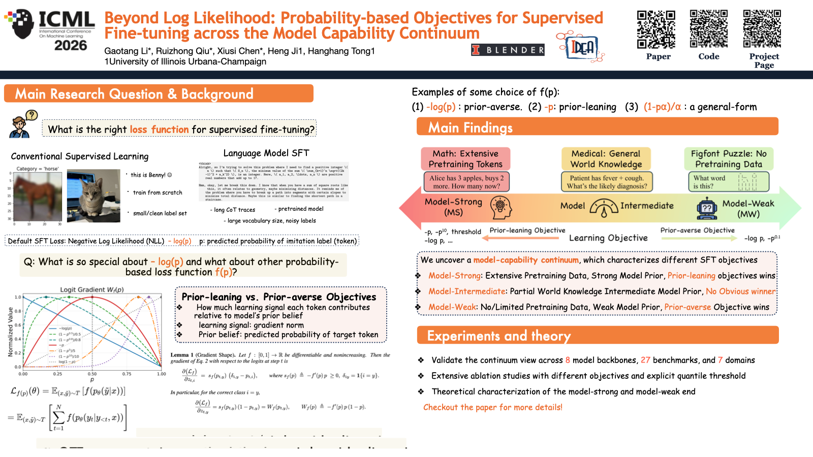

Supervised fine-tuning (SFT) is the standard approach for post-training large language models, yet it often shows limited generalization. We trace this limitation to its default training objective: negative log likelihood (NLL). While NLL is classically optimal when training from scratch, post-training operates in a different paradigm where models already encode task-relevant priors and supervision can be long and noisy.
We systematically study probability-based objectives and characterize when and why different objectives succeed or fail. Across 8 model backbones, 27 benchmarks, and 7 domains, we uncover a model-capability continuum: near the model-strong end, prior-leaning objectives that downweight low-probability tokens consistently outperform NLL; toward the model-weak end, NLL dominates; in between, no single objective prevails.
Standard SFT with -log p gives the largest gradient to tokens the model currently assigns low probability. That is natural when training from scratch: low probability usually means the model has not learned the concept yet.
Post-training is different. A pretrained LLM may already know much of the target task, while long chain-of-thought demonstrations can contain noisy, redundant, or locally unreliable tokens. In those cases, blindly forcing the model to imitate every low-probability token can damage an otherwise useful prior.
Emphasizes low-probability tokens and broadly corrects weak or misaligned priors.
Emphasizes already plausible tokens and protects reliable model priors from noisy supervision.

We study objectives of the form Lf(pθ) = E[f(pθ(˜y|x))]. The key object is not just the loss value, but how the objective distributes logit-gradient weight over the model's current probability p. NLL is prior-averse because it keeps strong pressure on low-probability tokens. Objectives such as -p are prior-leaning because they shift training signal toward tokens the model already considers plausible.
Math and code-like settings where pretraining already provides useful priors.
Domains such as medical reasoning where models have partial but unstable knowledge.
Novel symbolic or low-coverage tasks where the base model has little reliable prior.
The continuum is not a task-name taxonomy. It can be diagnosed by pretraining coverage and by measuring how confidently the base model assigns probability to training targets. The same objective can help in one regime and hurt in another.

Experiments across 8 backbones, 27 benchmarks, and 7 domains show the same pattern: when the base model's prior is reliable, objectives that downweight low-probability tokens can substantially improve generalization. When the model lacks relevant prior knowledge, NLL's strong correction signal is necessary.

The mechanism is visible in likelihood estimation and thresholding analyses: low-probability tokens can be noise against a strong prior, but become crucial corrective signals when the prior is weak.

The takeaway is not to replace NLL with a new universal default. Instead, choose the objective according to model capability: estimate the base model's target-token confidence, locate the task on the continuum, and sweep prior-leaning or prior-averse objectives accordingly.

@article{li2025beyond,
title={Beyond log likelihood: Probability-based objectives for supervised fine-tuning across the model capability continuum},
author={Li, Gaotang and Qiu, Ruizhong and Chen, Xiusi and Ji, Heng and Tong, Hanghang},
journal={arXiv preprint arXiv:2510.00526},
year={2025}
}